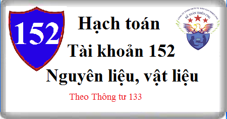

Cách hạch toán Tài khoản 152 theo Thông tư 133, cách hạch toán Nguyên vật liệu phụ, chính, nguyên vật liệu gia công, hỏng, thừa thiếu, vượt định mức. Quy định về Nguyên vật liệu gồm những gì?
1. Nguyên tắc kế toán Tài khoản 152 - Nguyên vật liệu
a) Tài khoản này dùng để phản ánh trị giá hiện có và tình hình biến động tăng, giảm của các loại nguyên liệu, vật liệu trong kho của doanh nghiệp. Nguyên liệu, vật liệu của doanh nghiệp là những đối tượng lao động mua ngoài hoặc tự chế biến dùng cho mục đích sản xuất, kinh doanh của doanh nghiệp. Nguyên liệu, vật liệu phản ánh vào tài khoản này được phân loại như sau:
- Nguyên liệu, vật liệu chính: Là những loại nguyên liệu và vật liệu khi tham gia vào quá trình sản xuất thì cấu thành thực thể vật chất, thực thể chính của sản phẩm. Vì vậy khái niệm nguyên liệu, vật liệu chính gắn liền với từng doanh nghiệp sản xuất cụ thể. Trong các doanh nghiệp kinh doanh thương mại, dịch vụ... không đặt ra khái niệm vật liệu chính, vật liệu phụ. Nguyên liệu, vật liệu chính cũng bao gồm cả nửa thành phẩm mua ngoài với mục đích tiếp tục quá trình sản xuất, chế tạo ra thành phẩm.
- Vật liệu phụ: Là những loại vật liệu khi tham gia vào quá trình sản xuất, không cấu thành thực thể chính của sản phẩm nhưng có thể kết hợp với vật liệu chính làm thay đổi màu sắc, mùi vị, hình dáng bề ngoài, tăng thêm chất lượng của sản phẩm hoặc tạo điều kiện cho quá trình chế tạo sản phẩm được thực hiện bình thường, hoặc phục vụ cho nhu cầu công nghệ, kỹ thuật, bảo quản đóng gói; phục vụ cho quá trình lao động.
- Nhiên liệu: Là những thứ có tác dụng cung cấp nhiệt lượng trong quá trình sản xuất, kinh doanh tạo điều kiện cho quá trình chế tạo sản phẩm diễn ra bình thường. Nhiên liệu có thể tồn tại ở thể lỏng, thể rắn và thể khí.
- Vật tư thay thế: Là những vật tư dùng để thay thế, sửa chữa máy móc thiết bị, phương tiện vận tải, công cụ, dụng cụ sản xuất...
- Vật liệu và thiết bị xây dựng cơ bản: Là những loại vật liệu và thiết bị được sử dụng cho công việc xây dựng cơ bản. Đối với thiết bị xây dựng cơ bản bao gồm cả thiết bị cần lắp, không cần lắp, công cụ, khí cụ và vật kết cấu dùng để lắp đặt vào công trình xây dựng cơ bản.
b) Kế toán nhập, xuất, tồn kho nguyên liệu, vật liệu trên Tài khoản 152 phải được thực hiện theo nguyên tắc giá gốc. Nội dung giá gốc của nguyên liệu, vật liệu được xác định tùy theo từng nguồn nhập.
- Giá gốc của nguyên liệu, vật liệu mua ngoài, bao gồm: Giá mua ghi trên hóa đơn, các khoản thuế không được hoàn lại, chi phí vận chuyển, bốc xếp, bảo quản, phân loại, bảo hiểm,... nguyên liệu, vật liệu từ nơi mua về đến kho của doanh nghiệp, công tác phí của cán bộ thu mua, chi phí của bộ phận thu mua độc lập, các chi phí khác có liên quan trực tiếp đến việc thu mua nguyên vật liệu và số hao hụt tự nhiên trong định mức (nếu có):
+ Trường hợp thuế GTGT hàng nhập khẩu được khấu trừ thì giá trị của nguyên liệu, vật liệu mua vào được phản ánh theo giá mua chưa có thuế GTGT.
+ Trường hợp thuế GTGT hàng nhập khẩu không được khấu trừ thì giá trị của nguyên liệu, vật liệu mua vào bao gồm cả thuế GTGT.
- Giá gốc của nguyên liệu, vật liệu tự chế biến, bao gồm: Giá thực tế của nguyên liệu xuất chế biến và chi phí chế biến.
- Giá gốc của nguyên liệu, vật liệu thuê ngoài gia công chế biến, bao gồm: Giá thực tế của nguyên liệu, vật liệu xuất thuê ngoài gia công chế biến, chi phí vận chuyển vật liệu đến nơi chế biến và từ nơi chế biến về doanh nghiệp, tiền thuê ngoài gia công chế biến.
- Giá gốc của nguyên liệu nhận góp vốn liên doanh, cổ phần là giá trị được các bên tham gia góp vốn liên doanh thống nhất đánh giá chấp thuận.
c) Việc tính trị giá của nguyên liệu, vật liệu xuất kho trong kỳ, được thực hiện theo một trong các phương pháp sau:
- Phương pháp giá thực tế đích danh;
- Phương pháp bình quân gia quyền sau mỗi lần nhập hoặc cuối kỳ;
- Phương pháp nhập trước, xuất trước.
Doanh nghiệp lựa chọn phương pháp tính giá nào thì phải đảm bảo tính nhất quán trong cả niên độ kế toán.
d) Kế toán chi tiết nguyên liệu, vật liệu phải thực hiện theo từng kho, từng loại, từng nhóm, thứ nguyên liệu, vật liệu. Trường hợp doanh nghiệp sử dụng giá hạch toán trong kế toán chi tiết nhập, xuất nguyên liệu, vật liệu, thì cuối kỳ kế toán phải tính hệ số chênh lệch giữa giá thực tế và giá hạch toán của nguyên liệu, vật liệu để tính giá thực tế của nguyên liệu, vật liệu xuất dùng trong kỳ theo công thức:
| Hệ số chênh lệch giữa giá thực tế và giá hạch toán của NVL (1) | = | Giá thực tế của NVL tồn kho đầu kỳ | + | Giá thực tế của NVL nhập kho trong kỳ |
| Giá hạch toán của NVL tồn kho đầu kỳ | + | Giá hạch toán của NVL nhập kho trong kỳ |
| Giá thực tế của NVL xuất dùng trong kỳ | = | Giá hạch toán của NVL xuất dùng trong kỳ | x | Hệ số chênh lệch giữa giá thực tế và giá hạch toán của NVL (1) |
2. Kết cấu và nội dung Tài khoản 152 - Nguyên vật liệu
Bên Nợ:
- Trị giá thực tế của nguyên liệu, vật liệu nhập kho do mua ngoài, tự chế, thuê ngoài gia công, chế biến, nhận góp vốn hoặc từ các nguồn khác;
- Trị giá nguyên liệu, vật liệu thừa phát hiện khi kiểm kê;
- Kết chuyển trị giá thực tế của nguyên liệu, vật liệu tồn kho cuối kỳ (trường hợp doanh nghiệp kế toán hàng tồn kho theo phương pháp kiểm kê định kỳ).
Bên Có:
- Trị giá thực tế của nguyên liệu, vật liệu xuất kho dùng vào sản xuất, kinh doanh, để bán, thuê ngoài gia công chế biến hoặc đưa đi góp vốn;
- Trị giá nguyên liệu, vật liệu trả lại người bán hoặc được giảm giá hàng mua;
- Chiết khấu thương mại được hưởng khi mua nguyên liệu, vật liệu;
- Trị giá nguyên liệu, vật liệu hao hụt, mất mát phát hiện khi kiểm kê;
- Kết chuyển trị giá thực tế của nguyên liệu, vật liệu tồn kho đầu kỳ (trường hợp doanh nghiệp kế toán hàng tồn kho theo phương pháp kiểm kê định kỳ).
Số dư bên Nợ:
Trị giá thực tế của nguyên liệu, vật liệu tồn kho cuối kỳ.
3. Cách hạch toán Nguyên vật liệu Tài khoản 152 theo TT 133:
3.1. Trường hợp doanh nghiệp hạch toán hàng tồn kho theo phương pháp kê khai thường xuyên.
a) Khi mua nguyên liệu, vật liệu về nhập kho, căn cứ hóa đơn, phiếu nhập kho và các chứng từ có liên quan phản ánh giá trị nguyên liệu, vật liệu nhập kho:
- Nếu thuế GTGT đầu vào được khấu trừ, ghi:
Nợ TK 152 - Nguyên liệu, vật liệu (giá mua chưa có thuế GTGT)
Nợ TK 133 Thuế GTGT được khấu trừ (1331)
Có các TK 111, 112, 141, 331,... (tổng giá thanh toán).
- Nếu thuế GTGT đầu vào không được khấu trừ thì giá trị nguyên vật liệu bao gồm cả thuế GTGT.
Xem thêm: Cách tính giá nhập kho nguyên vật liệu
b) Kế toán nguyên vật liệu trả lại cho người bán, khoản chiết khấu thương mại hoặc giảm giá hàng bán nhận được khi mua nguyên vật liệu:
- Trường hợp trả lại nguyên vật liệu cho người bán, ghi:
Nợ Tài khoản 331 Phải trả người bán
Có TK 152 - Nguyên liệu, vật liệu
Có TK 133 - Thuế GTGT được khấu trừ.
- Trường hợp khoản chiết khấu thương mại hoặc giảm giá hàng bán nhận được sau khi mua nguyên, vật liệu (kể cả các khoản tiền phạt vi phạm hợp đồng kinh tế về bản chất làm giảm giá trị bên mua phải thanh toán) thì kế toán phải căn cứ vào tình hình biến động của nguyên vật liệu để phân bổ số chiết khấu thương mại, giảm giá hàng bán được hưởng dựa trên số nguyên vật liệu còn tồn kho, số đã xuất dùng cho sản xuất sản phẩm hoặc cho hoạt động đầu tư xây dựng hoặc đã xác định là tiêu thụ trong kỳ:
Nợ các Tài khoản 111, 112, 331,....
Có TK 152 - Nguyên liệu, vật liệu (nếu NVL còn tồn kho)
Có Tài khoản 154 Chi phí sản xuất dở dang (nếu NVL đã xuất dùng cho sản xuất)
Có TK 241 - Xây dựng cơ bản dở dang (nếu NVL đã xuất dùng cho hoạt động đầu tư xây dựng)
Có TK 632 - Giá vốn hàng bán (nếu sản phẩm do NVL đó cấu thành đã được xác định là tiêu thụ trong kỳ)
Có TK 642 - Chi phí quản lý kinh doanh (NVL dùng cho hoạt động bán hàng, quản lý)
Có TK 133 - Thuế GTGT được khấu trừ (1331) (nếu có).
Xem thêm: Cách hạch toán Chiết khấu thương mại
c) Trường hợp doanh nghiệp đã nhận được hóa đơn mua hàng nhưng nguyên liệu, vật liệu chưa về nhập kho doanh nghiệp thì kế toán lưu hóa đơn vào một tập hồ sơ riêng “Hàng mua đang đi đường”.
- Nếu trong tháng hàng về thì căn cứ vào hóa đơn, phiếu nhập kho để ghi vào tài khoản 152 “Nguyên liệu, vật liệu”.
- Nếu đến cuối kỳ nguyên liệu, vật liệu vẫn chưa về thì căn cứ vào hóa đơn, kế toán ghi nhận hàng mua đang đi đường:
Nợ TK 151 - Hàng mua đang đi đường
Nợ TK 133 - Thuế GTGT được khấu trừ (1331)
Có TK 331 - Phải trả cho người bán; hoặc
Có các TK 111, 112, 141,...
- Sang tháng sau, khi nguyên liệu, vật liệu về nhập kho, căn cứ vào hóa đơn và phiếu nhập kho, ghi:
Nợ TK 152 - Nguyên liệu, vật liệu
Có TK 151 - Hàng mua đang đi đường.
d) Khi trả tiền cho người bán, nếu được hưởng chiết khấu thanh toán, thì khoản chiết khấu thanh toán thực tế được hưởng được ghi nhận vào doanh thu hoạt động tài chính, ghi:
Nợ TK 331 - Phải trả cho người bán
Có TK 515 - Doanh thu hoạt động tài chính (chiết khấu thanh toán).
Xem thêm: Cách hạch toán Chiết khấu thanh toán
đ) Đối với nguyên liệu, vật liệu nhập khẩu:
- Khi nhập khẩu nguyên vật liệu, ghi:
Nợ TK 152 - Nguyên liệu, vật liệu
Có TK 331 - Phải trả cho người bán
Có TK 3331 - Thuế GTGT phải nộp (33312) (nếu thuế GTGT đầu vào của hàng nhập khẩu không được khấu trừ)
Có TK 3332 Thuế tiêu thụ đặc biệt (nếu có).
Có TK 3333 - Thuế xuất, nhập khẩu (chi tiết thuế nhập khẩu).
Có TK 33381 - Thuế bảo vệ môi trường.
- Nếu thuế GTGT đầu vào của hàng nhập khẩu được khấu trừ, ghi:
Nợ TK 133 - Thuế GTGT được khấu trừ
Có TK 3331 - Thuế GTGT phải nộp (33312).
e) Các chi phí về thu mua, bốc xếp, vận chuyển nguyên liệu, vật liệu từ nơi mua về kho doanh nghiệp, ghi:
Nợ TK 152 - Nguyên liệu, vật liệu
Nợ TK 133 - Thuế GTGT được khấu trừ (1331)
Có các Tài khoản 112, 111 111, 141, 331,...
g) Đối với nguyên liệu, vật liệu nhập kho do thuê ngoài gia công, chế biến:
- Khi xuất nguyên liệu, vật liệu đưa đi gia công, chế biến, ghi:
Nợ TK 154 - Chi phí sản xuất, kinh doanh dở dang
Có TK 152 - Nguyên liệu, vật liệu.
- Khi phát sinh chi phí thuê ngoài gia công, chế biến, ghi:
Nợ TK 154 - Chi phí sản xuất, kinh doanh dở dang
Nợ TK 133 - Thuế GTGT được khấu trừ (1331) (nếu có)
Có các TK 111, 112, 131, 141,...
- Khi nhập lại kho số nguyên liệu, vật liệu thuê ngoài gia công, chế biến xong, ghi:
Nợ TK 152 - Nguyên liệu, vật liệu
Có TK 154 - Chi phí sản xuất, kinh doanh dở dang.
h) Đối với nguyên liệu, vật liệu nhập kho do tự chế:
- Khi xuất kho nguyên liệu, vật liệu để tự chế biến, ghi:
Nợ TK 154 - Chi phí sản xuất, kinh doanh dở dang
Có TK 152 - Nguyên liệu, vật liệu.
- Khi nhập kho nguyên liệu, vật liệu đã tự chế, ghi:
Nợ TK 152 - Nguyên liệu, vật liệu
Có TK 154 - Chi phí sản xuất, kinh doanh dở dang.
i) Đối với nguyên liệu, vật liệu thừa phát hiện khi kiểm kê đã xác định được nguyên nhân thì căn cứ nguyên nhân thừa để ghi sổ, nếu chưa xác định được nguyên nhân thì căn cứ vào giá trị nguyên liệu, vật liệu thừa, ghi:
Nợ TK 152 - Nguyên liệu, vật liệu
Có TK 338 Phải trả phải nộp khác (3381).
- Khi có quyết định xử lý nguyên liệu, vật liệu thừa phát hiện trong kiểm kê, căn cứ vào quyết định xử lý, ghi:
Nợ TK 338 - Phải trả, phải nộp khác (3381)
Có các tài khoản có liên quan.
- Nếu xác định ngay khi kiểm kê số nguyên liệu, vật liệu thừa là của các doanh nghiệp khác khi nhập kho chưa ghi tăng TK 152 thì không ghi vào bên Có tài khoản 338 (3381) mà doanh nghiệp chủ động ghi chép và theo dõi trong hệ thống quản trị và trình bày trong phần thuyết minh Báo cáo tài chính.
k) Khi xuất kho nguyên liệu, vật liệu sử dụng vào sản xuất, kinh doanh, ghi:
Nợ các TK 154, 642,...
Có TK 152 - Nguyên liệu, vật liệu.
l) Xuất nguyên liệu, vật liệu sử dụng cho hoạt động đầu tư xây dựng cơ bản hoặc sửa chữa lớn TSCĐ, ghi:
Nợ TK 241 Xây dựng cơ bản dở dang.
Có TK 152 - Nguyên liệu, vật liệu.
m) Đối với nguyên liệu, vật liệu đưa đi góp vốn vào đơn vị khác, Khi xuất nguyên liệu, vật liệu, ghi:
Nợ Tài khoản 228 Đầu tư góp vốn vào đơn vị khác (theo giá đánh giá lại)
Nợ TK 811 - Chi phí khác (giá đánh giá lại nhỏ hơn giá trị ghi sổ)
Có TK 152 - Nguyên liệu, vật liệu (theo giá trị ghi sổ)
Có TK 711 - Thu nhập khác (giá đánh giá lại lớn hơn giá trị ghi sổ).
n) Khi xuất nguyên liệu, vật liệu dùng để mua lại phần vốn góp tại đơn vị khác, ghi:
- Ghi nhận doanh thu bán nguyên vật liệu và khoản đầu tư vào đơn vị khác, ghi:
Nợ TK 228 – Đầu tư góp vốn vào đơn vị khác (theo giá trị hợp lý)
Có TK 511 - Doanh thu bán hàng và cung cấp dịch vụ
Có TK 3331 - Thuế GTGT đầu ra phải nộp.
- Ghi nhận giá vốn nguyên vật liệu dùng để mua lại phần vốn góp vào đơn vị khác, ghi
Nợ TK 632 - Giá vốn hàng bán
Có TK 152 - Nguyên liệu, vật liệu.
o) Đối với nguyên liệu, vật liệu thiếu hụt phát hiện khi kiểm kê:
Mọi trường hợp thiếu hụt nguyên liệu, vật liệu trong kho hoặc tại nơi quản lý, bảo quản phát hiện khi kiểm kê phải lập biên bản và truy tìm nguyên nhân, xác định người phạm lỗi. Căn cứ vào biên bản kiểm kê và quyết định xử lý của cấp có thẩm quyền để ghi sổ kế toán:
- Nếu do nhầm lẫn hoặc chưa ghi sổ phải tiến hành ghi bổ sung hoặc điều chỉnh lại số liệu trên sổ kế toán;
- Nếu giá trị nguyên liệu, vật liệu hao hụt nằm trong phạm vi hao hụt cho phép (hao hụt vật liệu trong định mức), ghi:
Nợ TK 632 - Giá vốn hàng bán
Có TK 152 - Nguyên liệu, vật liệu.
- Nếu số hao hụt, mất mát chưa xác định rõ nguyên nhân phải chờ xử lý, căn cứ vào giá trị hao hụt, ghi:
Nợ TK 138 - Phải thu khác (1381 - Tài sản thiếu chờ xử lý)
Có TK 152 - Nguyên liệu, vật liệu.
- Khi có quyết định xử lý, căn cứ vào quyết định, ghi:
Nợ TK 111 - Tiền mặt (người phạm lỗi nộp tiền bồi thường)
Nợ Tài khoản 138 Phải thu khác (1388) (tiền bồi thường của người phạm lỗi)
Nợ TK 334 Phải trả người lao động (trừ tiền lương của người phạm lỗi)
Nợ TK 632 - Giá vốn hàng bán (phần giá trị hao hụt, mất mát nguyên liệu, vật liệu còn lại phải tính vào giá vốn hàng bán)
Có TK 138 - Phải thu khác (1381 - Tài sản thiếu chờ xử lý).
p) Đối với nguyên vật liệu, phế liệu ứ đọng, không cần dùng:
- Khi thanh lý, nhượng bán nguyên vật liệu, phế liệu, kế toán phản ánh giá vốn ghi:
Nợ TK 632 - Giá vốn hàng bán
Có TK 152 - Nguyên liệu, vật liệu.
- Kế toán phản ánh doanh thu bán nguyên vật liệu, phế liệu, ghi:
Nợ các TK 111, 112, 131
Có TK 511 - Doanh thu bán hàng và cung cấp dịch vụ (5118)
Có TK 333 - Thuế và các khoản phải nộp Nhà nước.
3.2. Trường hợp doanh nghiệp hạch toán hàng tồn kho theo phương pháp kiểm kê định kỳ.
a) Đầu kỳ, kết chuyển trị giá nguyên liệu, vật liệu tồn kho đầu kỳ, ghi:
Nợ TK 611 - Mua hàng
Có TK 152 - Nguyên liệu, vật liệu.
b) Cuối kỳ, căn cứ vào kết quả kiểm kê xác định giá trị nguyên liệu, vật liệu tồn kho cuối kỳ, ghi:
Nợ TK 152 - Nguyên liệu, vật liệu
Có TK 611 - Mua hàng.
----------------------------------
Kế toán Diệu Tâm xin chúc bạn thành công! Các bạn muốn học cách hạch toán, hoàn thiện sổ sách, kê khai thuế - Quyết toán thuế, Lập báo cáo tài chính thực tế chuyên sâu thì có thể tham gia: Lớp học kế toán thực hành
